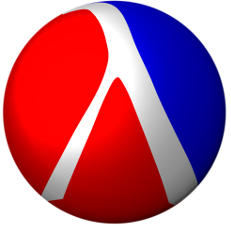
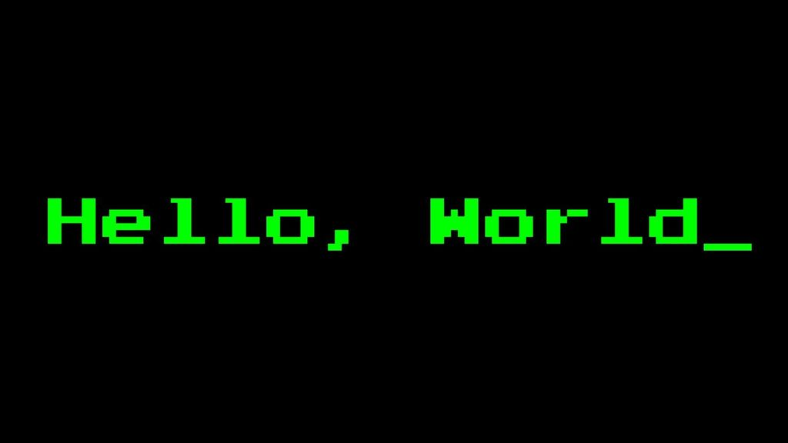
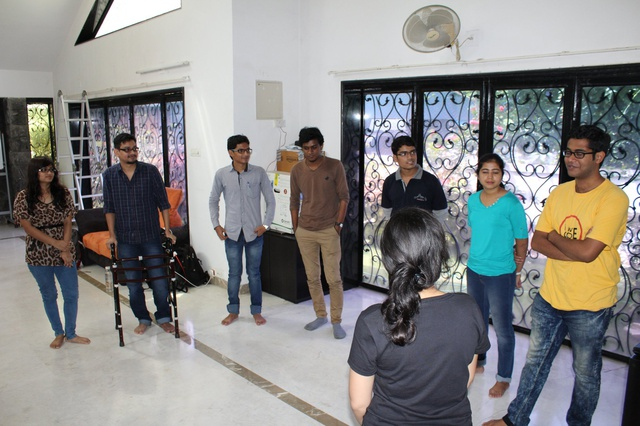

Recent Posts¶
2018-09-19 - Scheme Crash Course
This crash course on Scheme that I’m writing is the kind of course that I would had liked before starting to read SICP. This crash course is geared towards people who are already familiar with some programming language and want to start with SICP but are not really comfortable Scheme or any LISP for that matter. All the Python code in this blog is Python 3 compatible and all the Scheme code is MIT-Scheme compatible.
2018-01-03 - SICP Challenge
Almost over a year back I started reading the long-awaited book from my bucket list, “Structure and Interpretation of Computer Programs”. When I was reading the book, quite a lot of the things in the book were already known to me and therefore it started to get boring. But then I searched on the internet why so many people read the book SICP. The problem was not the reason behind reading the book but the problem was the approach towards the book. The book is not designed to be just read as if it is a novel but you also need to solve the problems in the book. This made me go back to the book again.
2016-09-19 - Hello World
Hello World! The title of this post in the honour of the first program that is written while learning programming. This is my first post on the blog, and hence I’m calling it Hello World! post. I’m mainly passionate about technology and coding is my passion. I’m right now a student studying M.Tech at Manipal Institute of Technology, Manipal. The main reason of writing this blog is to share with the world what I think, and the new things that I learn. I also like learning about some cool science-related concepts esp. w.r.t. Physics. I’m also a noob Guitarist and a hobby swimmer. Other things that I like are eating and trying out different cuisines.
2016-09-19 - Finally an Android App
After a couple of years after writing android apps, I chose to write an android app again. I had used Android Studio before but never tired serious android development after the very first time I tried it in Eclipse (the old times when there was not android studio).

2016-07-18 - At Nelkinda Coderetreat
Completely unexpected of what is there, I registered for Coderetreat that’s held at Nelkinda which was on 16th of July 2016. Facilitated by Siddhesh Nikude and Shweta Sadawarte it was a long but a really nice event. More than anything else I got to learn a lot from that event and I will write some of my experience here.

{kind=link}
{kind=link}
{kind=link}
{kind=link}